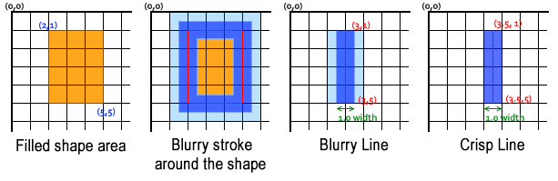
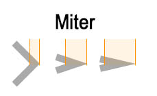

gets or sets the overlapping or blending style between the previous and new spahes (images)
canvasCtx2D.lineCap = "butt/round/square"
gets or sets the line ending cap (edge) style of the canvas context
canvasCtx2D.lineDashOffset = nr(px)
gets or sets the "offset" of the dashed line (moves "off" [ex: horizontal line moves dashed line to the left on its frame])
canvasCtx2D.lineJoin = "miter/round/bevel"
gets or sets the type of corner created when two lines meet of the canvas context
canvasCtx2D.lineWidth = nr(px)
gets or sets the line width of the canvas context (line width is split by half/half around shapes)
canvasCtx2D.miterLimit = nr(px)
gets or sets the maximum miter length (default 10), if the mitter is bigger than the set limit value ((lineWidth / 2 ) / miterLength) line join set to "blunt" (only works if the lineJoin is set to "miter")
- if the shape has both "fill" and "stroke" the shadow will hide one another (depending the order [tested 2018-11-11])
- in canvas, any line or filed area which partially fills pixels will have blurry edges
- using external fonts in canvas loaded by CSS @font-face roule has poor support (EDGE support only) [tested 2018-11-15]
- there are a bunch of values for the globalCompositeOperation property, but not all works garanteed you can find my GlobalCompositeOperation TESTER on the Exercise section
Description and Demonstration :
- you set the styling parameters to the canvas context, not to individual shapes
var ctx = document.getElementById("myCanvasElement").getContext("2d");
ctx.strokeStyle = "blue"; // all the strokes will be blue form this point (unles specified otherwise)
ctx.rect(75, 75, 50, 50);
ctx.stroke();
ctx.beginPath();
ctx.rect(175, 175, 50, 50);
ctx.stroke(); // this rectangle's stroke is also blue
color and shadow strokeStyle / fillStyle / globalAlpha / globalCompositeOperation / shadowOffsetX / shadowOffsetY / shadowColor / shadowBlur
- if the shape has both "fill" and "stroke" the shadow will hide one another (depending the order [tested 2018-11-11])
- the shadow thickness itself is controled by the lineWidth property
SYNTAX : canvasCtx2D.strokeStyle = "colorCSS"/gradient/pattern // gets or sets the stroke style of the canvas context
canvasCtx2D.fillStyle = "colorCSS"/gradient/pattern // gets or sets the fill style of the canvas context
canvasCtx2D.globalAlpha = opacityValueCSS // gets or sets the transparency of the canvas context
canvasCtx2D.globalCompositeOperation = "compositionValue" // gets or sets the overlapping or blending style between the previous and new spahes (images)
- "compositionValue" : "source-over" (default) = new shape overlaps the old one / "destination-over" = new shape under the old one / "source-atop" = part of the new shape is visible only in the old shape's area
"destination-out" = new shape removed even in the old shape's area / "lighter" = retains the lighter pixes in the overlapping area / "xor" = overlapping area set to transparent
MDN Values [link]canvasCtx2D.shadowColor = "colorCSS" // gets or sets the shadow color of the canvas context
canvasCtx2D.shadowBlur = nr(blurValue) // gets or sets the shadow blur value of the canvas context
canvasCtx2D.shadowOffsetX = nr(px) // gets or sets the horizontal distance of the shadow from the shape of the canvas context
canvasCtx2D.shadowOffsetY = nr(px) // gets or sets the vertical distance of the shadow from the shap of the canvas context
<canvas id="demo"></canvas>
<script>
var colorDemo = function() {
var ctx = document.getElementById("demo").getContext("2d", {alpha:false});
ctx.fillStyle = "red"; // fill color set
ctx.strokeStyle = "rgb(0, 0, 255)"; // stroke color set
ctx.lineWidth = 10; // stroke thickness set
// shadow --------
ctx.shadowColor = "yellow"; // shadow paremethers set
ctx.shadowOffsetX = 10;
ctx.shadowOffsetY = 5;
ctx.shadowBlur = 5;
ctx.beginPath();
ctx.rect(70, 30, 100, 75);
ctx.stroke();
ctx.fill(); // -! shadow displayed arround the shape itself (filled area) because the shape ends with the "fill()" method the shadow hides (displayed on the top of) the stroke
}
colorDemo();
</script>
- globalCompositeOperation and globalAlpha properties
<canvas id="demo" style="border:solid 1px black"></canvas>
<script>
var ctx = document.getElementById("demo").getContext("2d");
ctx.fillStyle = "red";
ctx.fillRect(10, 10, 200, 50);
ctx.globalCompositeOperation = "destination-over"; // old shape overlaps the new one ("source-over" (default) = new shap overlaps the old one)
ctx.globalAlpha = 0.5; // context set to half opaque
ctx.fillStyle = "blue";
ctx.fillRect(90, 10, 200, 50);
</script>
Example :
strokeStyle and fillStyle properties TEST
CODE :
<canvas id="colorStyleCanvas" style="border:solid 1px black"></canvas>
<script>
var coloring = function() {
var ctx = document.getElementById("colorStyleCanvas").getContext("2d");
ctx.strokeStyle = "white"; // global color style applied
ctx.fillStyle = "#368ac5";
ctx.lineWidth = 5;
ctx.beginPath();
ctx.rect(20, 50, 50, 50);
ctx.stroke();
ctx.fill();
ctx.beginPath();
ctx.arc(125, 75, 27, 0, Math.PI * 2);
ctx.stroke();
ctx.fill();
ctx.beginPath();
ctx.strokeStyle = "red"; // global styling changed, applies to all further styling (not for this path only)
ctx.fillStyle = "lightgreen";
ctx.ellipse(200, 75, 17, 30, 0, 0, Math.PI * 2);
ctx.stroke();
ctx.fill();
ctx.strokeRect(250, 20, 25, 25);
ctx.fillRect(250, 70, 25, 25);
}
coloring();
</script>
globalAlpha property TEST
- the double stroke appears because the stroke thickness arround the rectangle
CODE :
<canvas id="globalAlpha" style="border:1px black solid"></canvas>
<script>
var globalAlpha = function() {
var ctx = document.getElementById("globalAlpha").getContext("2d");
ctx.strokeStyle = "red";
ctx.fillStyle = "blue";
ctx.lineWidth = 15;
ctx.rect(20, 20, 50, 50);
ctx.stroke();
ctx.fill();
ctx.globalAlpha = 0.5; // global alpha chanel = half opaque (transparency set to the context)
ctx.beginPath();
ctx.rect(100, 20, 50, 50);
ctx.stroke();
ctx.fill();
}
globalAlpha();
</script>
globalCompositeOperation property TEST
- these values works properly in every browsers (which supports canvas obviosly)
CODE :
<canvas id="globalComposite" style="border:1px black solid" width="700" height="250"></canvas>
<script>
var globalCompositeFn = function() {
var ctx = document.getElementById("globalComposite").getContext("2d");
ctx.font = "16px sans-serif";
ctx.textBaseline = "middle";
// source-over (default)
ctx.beginPath();
ctx.fillStyle = "blue";
ctx.fillRect(10, 10, 40, 30);
ctx.globalCompositeOperation = "source-over"; // default value
ctx.beginPath();
ctx.fillStyle = "red";
ctx.arc(55, 25, 19, 0, Math.PI * 2);
ctx.fill();
ctx.fillStyle = "black";
ctx.fillText("\"source-over\" (default) / new shape overlaps the old one", 100, 25);
// soruce-atop
ctx.beginPath();
ctx.fillStyle = "blue";
ctx.fillRect(10, 50, 40, 30);
ctx.globalCompositeOperation = "source-atop";
ctx.beginPath();
ctx.fillStyle = "red";
ctx.arc(55, 65, 19, 0, Math.PI * 2);
ctx.fill();
ctx.globalCompositeOperation = "source-over"; // I actually had to use this "soucre-over" because otherwise the text will be hidden in this (and some other) cases!
ctx.fillStyle = "black";
ctx.fillText("\"source-atop\" / new shape drawn only in the old shape's area", 100, 65);
// destination-over
ctx.beginPath();
ctx.fillStyle = "blue";
ctx.fillRect(10, 90, 40, 30);
ctx.globalCompositeOperation = "destination-over";
ctx.beginPath();
ctx.fillStyle = "red";
ctx.arc(55, 105, 19, 0, Math.PI * 2);
ctx.fill();
ctx.globalCompositeOperation = "source-over";
ctx.fillStyle = "black";
ctx.fillText("\"destination-over\" / new shape is placed under the old one", 100, 105);
// destination-out
ctx.beginPath();
ctx.fillStyle = "blue";
ctx.fillRect(10, 130, 40, 30);
ctx.globalCompositeOperation = "destination-out";
ctx.beginPath();
ctx.fillStyle = "red";
ctx.arc(55, 145, 19, 0, Math.PI * 2);
ctx.fill();
ctx.globalCompositeOperation = "source-over";
ctx.fillStyle = "black";
ctx.fillText("\"destination-out\" / all shapes are removed from the old shape's region", 100, 145);
// lighter
ctx.beginPath();
ctx.fillStyle = "blue";
ctx.fillRect(10, 170, 40, 30);
ctx.globalCompositeOperation = "lighter";
ctx.beginPath();
ctx.fillStyle = "red";
ctx.arc(55, 185, 19, 0, Math.PI * 2);
ctx.fill();
ctx.globalCompositeOperation = "source-over";
ctx.fillStyle = "black";
ctx.fillText("\"lighter\" / retains the lightest pixels of the overlapping area", 100, 185);
// xor
ctx.beginPath();
ctx.fillStyle = "blue";
ctx.fillRect(10, 210, 40, 30);
ctx.globalCompositeOperation = "xor";
ctx.beginPath();
ctx.fillStyle = "red";
ctx.arc(55, 225, 19, 0, Math.PI * 2);
ctx.fill();
ctx.globalCompositeOperation = "source-over";
ctx.fillStyle = "black";
ctx.fillText("\"xor\" / overlapping area transparent", 100, 225);
}
globalCompositeFn();
</script>
globalCompositeOperation TESTER
enter a "globalCompositeOperation" value to TEST =
CODE :
<canvas id="compositeTester" style="border:1px black solid"></canvas>
<script>
function composTester(comp) {
var ctx = document.getElementById("compositeTester").getContext("2d");
var linearGrad = ctx.createLinearGradient(150, 0, 150, 150);
linearGrad.addColorStop(0, "black");
linearGrad.addColorStop(1, "white");
ctx.fillStyle = linearGrad;
ctx.fillRect(0, 0, 200, 150);
ctx.globalCompositeOperation = comp; // global composite value between 1st and 2nd rectangle
ctx.beginPath();
var triColorGrad = ctx.createLinearGradient(150, 0, 150, 150);
triColorGrad.addColorStop(0, "red");
triColorGrad.addColorStop(.5, "green");
triColorGrad.addColorStop(1, "blue");
ctx.fillStyle = triColorGrad;
ctx.fillRect(100, 0, 200, 150);
ctx.globalCompositeOperation = "source-over"; // guide lines (to see shape limits)
ctx.strokeStyle = "yellow";
ctx.moveTo(100, 0);
ctx.lineTo(100, 150);
ctx.moveTo(200, 0);
ctx.lineTo(200, 150);
ctx.stroke();
}
composTester("source-over");
</script>
combine multiple globalCompositeOperaton value on the same canvas context TEST
gradients and pattern createLinearGradient() / createRadialGradient() / addColorStop() / createPattern()
- the position of patterns and gradients are relative to the canvas element itself NOT the current shape
- they used as strokeStyle and fillStyle, they basically appears only where the shape's stroke and fill areas are on the canvas
SYNTAX : canvasCtx2D.createLinearGradient(xStart, yStart, xEnd, yEnd) // returns a linearGradientCanvas object with the linear coordinates set (opaque object)
- xStart / yStart and xEnd / yEnd : start and end coordinates relative to the canvas element itself NOT the shapecanvasCtx2D.createRadialGradient(xInnerCircle, yInnerCircle, radiusInnerCircle, xOuterCircle, yOuterCircle, radiusOuterCircle) // returns a radialGradientCanvas object with the radial coordinates set (opaque object)
- xInnerCircle / yInnerCircle / radiusInnerCircle : inner (start) circle parameters relative to the canvas element itself NOT the shape
- xOuterCircle / yOuterCircle / radiusOuterCircle : outer (end) circle parameters relative to the canvas element itself NOT the shapecanvasCtx2D.canvasGradient.addColorStop(colorStop_nr(0.0 - 1.0), "colorCSS") // specifies the color and the color stop in a canvasGradient object
- colorStop_nr(0.0 - 1.0) : position of the current color stop (0.0 = start / 1.0 = end)
canvasCtx2D.createPattern(media, "repeat") // creates a canvasPatternObject by using a Picture, Video or Canvas element
- media : media to repeat (HTMLImage / SVGImage / HTMLVideo / CanvasElement)
- "repeat" : how to repeat the image ("repeat"(default) / "repeat-x" / "repeat-y" / "no-repeat")
<canvas id="demo" style="border:solid 1px black;"></canvas>
<script>
let ctx = document.getElementById("demo").getContext("2d");
ctx.lineWidth = 15;
// create linear gradient
var linearGradient = ctx.createLinearGradient(0, 75, 300, 75); // linear gradient goes from the very left to the very right // -! relative to the canvas element NOT the shape!
linearGradient.addColorStop(0, "white"); // assign color stops to the gradient object (0 is the start point)
linearGradient.addColorStop(.5, "blue");
linearGradient.addColorStop(1, "red"); // 1 is the ending point (scale goes from 0 to 1);
// create radial gradient
var radialGradient = ctx.createRadialGradient(150, 75, 10, 150, 75, 80); // the inner and outer circle is the same but it is possible to position elsewhere, this could create interesting effects
radialGradient.addColorStop(0, "white");
radialGradient.addColorStop(.3, "blue");
radialGradient.addColorStop(.6, "green");
radialGradient.addColorStop(1, "red");
ctx.fillStyle = linearGradient; // gradient object are declared as styles
ctx.strokeStyle = radialGradient;
ctx.fillRect(20, 20, 100, 100); // gradients visible only on these areas (fancy stuff)
ctx.strokeRect(150, 20, 100, 100);
</script>
- pattern
<canvas id="demo" style="border:solid 1px black;"></canvas>
<img src="lamp.jpg" style="display:none;"> // image is present in the DOM but not displayed
<script>
let ctx = document.getElementById("demo").getContext("2d");
var img = document.querySelector('[src="lamp.jpg"]'); // get the image from the DOM
var pattern = ctx.createPattern(img, "repeat"); // create image pattern (different repeat options are available) // -! video can be used as pattern too but the canvas has to be redrawn in order to display the playing video (see demo below)
ctx.fillStyle = pattern; // pattern used as fill style
ctx.fillRect(10, 10, 280, 130); // filled rectange uses the patern as fill style
</script>
Example :
createLinearGradient() method TEST
CODE :
<canvas id="linearGradientTest" style="border:solid 1px black;">></canvas>
<canvas id="linearGradientFull" style="border:solid 1px black;">></canvas>
<script>
var linearGrad = function() {
var ctx = document.getElementById("linearGradientTest").getContext("2d");
var linearGradient = ctx.createLinearGradient(0, 0, 300, 150); // create the linear gradient canvas object
linearGradient.addColorStop(0, "red"); // add color stop to the returned gradient object
linearGradient.addColorStop(1, "black");
ctx.fillStyle = linearGradient; // can apply as fill and stroke to the context
ctx.strokeStyle = linearGradient;
ctx.lineWidth = 20;
ctx.strokeRect(20, 20, 100, 120);
ctx.fillRect(150, 20, 120, 120);
}
linearGrad();
var liearGradientFull = function() {
var ctx = document.getElementById("linearGradientFull").getContext("2d");
var linearGradient = ctx.createLinearGradient(150, 0, 150, 100); // create linear gradient canvas object
linearGradient.addColorStop(0, "white"); // color stops set
linearGradient.addColorStop(0.2, "red");
linearGradient.addColorStop(0.4, "green");
linearGradient.addColorStop(.6, "orange");
linearGradient.addColorStop(.8, "magenta");
linearGradient.addColorStop(1, "black");
ctx.fillStyle = linearGradient; // set the linear gradeint object as fill style
ctx.fillRect(10, 10, 280, 130);
}
liearGradientFull();
</script>
createRadialGradient() method TEST
- the ending (outer) circle has the same center coordinates
- the ending (outer) circle has different center than the inner one here
CODE :
<canvas id="radG1" style="border:solid 1px black;"></canvas>
<canvas id="radG2" style="border:solid 1px black;"></canvas>
<script>
var outerCircle = function() {
var ctx = document.getElementById("radG1").getContext("2d");
var gradient1 = ctx.createRadialGradient(75, 75, 0, 130, 75, 60);
gradient1.addColorStop(0, "red");
gradient1.addColorStop(.5, "white");
gradient1.addColorStop(1, "green");
ctx.fillStyle = gradient1;
ctx.fillRect(10, 10, 280, 130);
// rectagnel 2
var ctx2 = document.getElementById("radG2").getContext("2d");
var gradient2 = ctx2.createRadialGradient(75, 75, 0, 140, 75, 60); // the outer circle is out of range = causes wierd effect
gradient2.addColorStop(0, "red");
gradient2.addColorStop(.5, "white");
gradient2.addColorStop(1, "green");
ctx2.fillStyle = gradient2;
ctx2.fillRect(10, 10, 280, 130);
}
outerCircle();
</script>
createPattern() image TEST
CODE :
<canvas id="patternTest1" style="border:solid 1px black;"></canvas>
<img src="lamp.jpg" style="display:none;"> // image not displayed
<script>
var patterntTest = function() {
var ctx = document.getElementById("patternTest1").getContext("2d");
var img = document.querySelector('[src="lamp.jpg"]');
var pattern = ctx.createPattern(img, "repeat"); // image repeated both horizontally and vertically
ctx.strokeStyle = pattern;
ctx.lineWidth = 30;
ctx.strokeRect(10, 10, 280, 130);
}
patterntTest();
</script>
createPattern() video TEST
- we need to refresh (redraw) the canvas every time in order to get the motion picture
CODE :
<canvas id="patternTest2" style="border:solid 1px black;"></canvas>
<video id="myVideo" width="300" autoplay muted loop style="visibility:hidden;">
<source src="HTML5 Video.mp4" type="video/mp4">
</video>
<script>
function videoPlay() { // we recreate the canvas 60 times per second
var ctx = document.getElementById("patternTest2").getContext("2d");
var vid = document.getElementById("myVideo");
var video = ctx.createPattern(vid, "no-repeat"); // use the video element as pattern
ctx.fillStyle = video;
ctx.fillRect(10, 10, 280, 130); // any fancy shape could be used
frameCtrl = requestAnimationFrame(videoPlay);
}
var frameCtrl = window.requestAnimationFrame(videoPlay); // calls the canvas 60 times per second
window.setTimeout(stopAnimation, 20000); // this enshures that the vide stops after 20 secons (plays 2 times)
function stopAnimation() {
window.cancelAnimationFrame(frameCtrl);
}
</script>
- canvas split the lineWidth by half/half arround shapes or tatgeted coordinates, if the line (stroke) width is placed between two pixels, partially filled line pixels will be shaded, making the line blurry

- this is a generaly drawing issue in canvas, any line or filed area which partially fills pixels will have blurry edges!
SYNTAX : canvasCtx2D.lineWidth = nr(px) // gets or sets the line width of the canvas context (line width is split by half/half around shapes)
canvasCtx2D.lineCap = "butt/round/square" // gets or sets the line ending cap style of the canvas context
- "butt/round/square" : ("blunt"(default) flat edge / "round" rounded edge / "square" square added at the end of lines)
canvasCtx2D.lineJoin = "miter/round/bevel" // gets or sets the type of corner created when two lines meet of the canvas context
- "miter/round/bevel" : ("miter"(default) sharp / "round" rounded / "bevel" bevel (cut at the limit))
canvasCtx2D.miterLimit = nr(px) // gets or sets the maximum miter length (default 10), if the mitter is bigger than the set limit value ((lineWidth / 2 ) / miterLength) line join set to "blunt" (only works if the lineJoin is set to "miter")
canvasCtx2D.setLineDash([line_nr(px), space_nr(px), ...]) // sets the line dash pattern of the canvas context (no value = no line dash / 1 value = 1line and 1space (repeat))
canvasCtx2D.getLineDash() // returns the line dash patern as an Array of the canvas context
canvasCtx2D.lineDashOffset = nr(px) // gets or sets the "offset" of the dashed line (moves "off" [ex: horizontal line moves dashed line to the left on its frame])

<canvas id="demo"></canvas>
<script>
let ctx = document.getElementById("demo").getContext("2d");
ctx.lineWidth = 10; // line width set
ctx.lineCap = "round"; // line ends are rounded
ctx.lineJoin = "miter"; // when two lines meet (this is the default)
ctx.miterLimit = 1; // this turns the "lineJoin" value to "bevel" (limits the miter)
ctx.beginPath();
ctx.moveTo(20, 120);
ctx.lineTo(150, 20);
ctx.lineTo(280, 120);
ctx.stroke();
</script>
- line dash
<canvas id="demo"></canvas>
<script>
let ctx = document.getElementById("demo").getContext("2d");
ctx.setLineDash([10]); // equalt to [10, 10] sets the line dash to 10px line - 10px space - 10px line - 10px space ...(repeat)
ctx.setLineDash([5, 10, 15, 20]); // 5px line - 10 space - 15px line - 20 space ...(repeat)
ctx.lineDashOffset = 3; // moves the dashed line to the left 3px on its frame (off moved part is not visible)
ctx.moveTo(20, 75);
ctx.lineTo(280, 75);
ctx.stroke();
ctx.getLineDash(); // -> [5, 10, 15, 20] // returns the line dash values
</script>
Example :
lineWidth property TEST
- stroke (line) width is divided by half/half around the shape
CODE :
<canvas id="lineWidthsT" style="border:solid 1px black"></canvas>
<script>
var lineWidthTEST = function() {
var ctx = document.getElementById("lineWidthsT").getContext("2d");
ctx.beginPath();
ctx.moveTo(20, 20);
ctx.lineTo(20, 130);
ctx.stroke(); // default line width = 1px;
ctx.beginPath();
ctx.lineWidth = 5; // line width set to 5px
ctx.moveTo(40, 20);
ctx.lineTo(40, 130);
ctx.stroke();
ctx.beginPath(); // the stroke (line) around the shape is split in the middle
ctx.lineWidth = 15;
ctx.strokeStyle = "rgba(255, 0, 0, .3)"; // transparent stroke shows the stroke split
ctx.fillStyle = "blue";
ctx.rect(90, 20, 120, 100);
ctx.fill();
ctx.stroke();
}
lineWidthTEST();
</script>
lineCap property TEST
CODE :
<canvas id="lineCapT" style="border:solid 1px black"></canvas>
<script>
var lineCapTEST = function() {
var ctx = document.getElementById("lineCapT").getContext("2d");
// guide lines to see the difference
ctx.beginPath();
ctx.strokeStyle = "red";
ctx.moveTo(40, 0);
ctx.lineTo(40, 150);
ctx.moveTo(260, 0);
ctx.lineTo(260, 150);
ctx.stroke();
// line Cap test
ctx.lineWidth = 10;
ctx.strokeStyle = "black";
ctx.beginPath();
ctx.lineCap = "butt"; // default
ctx.moveTo(40, 60);
ctx.lineTo(260, 60);
ctx.stroke();
ctx.beginPath();
ctx.lineCap = "round"; // rounded line cap ADDED!
ctx.moveTo(40, 80);
ctx.lineTo(260, 80);
ctx.stroke();
ctx.beginPath();
ctx.lineCap = "square"; // square line cap ADDED!
ctx.moveTo(40, 100);
ctx.lineTo(260, 100);
ctx.stroke();
}
lineCapTEST();
</script>
lineJoin property TEST
CODE :
<canvas id="lineJoinT" style="border:solid 1px black"></canvas>
<script>
var lineJoinTEST = function() {
var ctx = document.getElementById("lineJoinT").getContext("2d");
ctx.strokeStyle = "red"; // this is the join limit
ctx.beginPath();
ctx.moveTo(0, 20);
ctx.lineTo(300, 20);
ctx.stroke();
ctx.lineWidth = 10;
ctx.strokeStyle = "black";
ctx.beginPath();
ctx.lineJoin = "miter"; // default value
ctx.moveTo(20, 130);
ctx.lineTo(50, 20);
ctx.lineTo(80, 130);
ctx.stroke();
ctx.beginPath();
ctx.lineJoin = "round"; // rounded
ctx.moveTo(100, 130);
ctx.lineTo(130, 20);
ctx.lineTo(160, 130);
ctx.stroke();
ctx.beginPath();
ctx.lineJoin = "bevel"; // cut at the line limit
ctx.moveTo(180, 130);
ctx.lineTo(210, 20);
ctx.lineTo(240, 130);
ctx.stroke();
}
lineJoinTEST();
</script>
miterLimit property TEST
CODE :
<canvas id="miterLimitT" style="border:solid 1px black"></canvas>
<script>
var miterLimitTEST = function() {
var ctx = document.getElementById("miterLimitT").getContext("2d");
ctx.strokeStyle = "red"; // this is the join limit
ctx.beginPath();
ctx.moveTo(0, 20);
ctx.lineTo(300, 20);
ctx.stroke();
ctx.lineWidth = 10;
ctx.strokeStyle = "black";
ctx.beginPath();
ctx.miterLimit = 10; // default mitter limit value (10)
ctx.moveTo(0, 130);
ctx.lineTo(30, 20);
ctx.lineTo(60, 130);
ctx.stroke();
ctx.beginPath();
ctx.miterLimit = 4; // miter is smaller than the set limit value = no bevel edge
ctx.moveTo(80, 130);
ctx.lineTo(110, 20);
ctx.lineTo(140, 130);
ctx.stroke();
ctx.beginPath();
ctx.miterLimit = 3; // miter is bigger than the set limit value = bevel edge
ctx.moveTo(160, 130);
ctx.lineTo(190, 20);
ctx.lineTo(220, 130);
ctx.stroke();
ctx.beginPath();
ctx.moveTo(240, 130);
ctx.lineTo(270, 20);
ctx.lineTo(300, 130);
ctx.stroke();
// miter calculation formula is ((lineWidth / 2 ) / miter length)
}
miterLimitTEST();
</script>
getLineDash() / setLineDash() / lineDashOffset TEST
CODE :
<canvas id="lineDashT" style="border:solid 1px black"></canvas>
<script>
var lineDashTest = function() {
var ctx = document.getElementById("lineDashT").getContext("2d");
ctx.lineWidth = 10;
ctx.beginPath();
ctx.setLineDash([10]); // 10px line and 10px space, same as [10, 10]
ctx.moveTo(40, 40);
ctx.lineTo(260, 40);
ctx.stroke();
ctx.beginPath(); // we use the same line dash value here (no declaration)
ctx.lineDashOffset = 5; // line start position moved 5px "off" (left in this situation)
ctx.moveTo(40, 60);
ctx.lineTo(260, 60);
ctx.stroke();
ctx.beginPath();
ctx.lineDashOffset = 0; // lineDashOffest set back to default value
ctx.setLineDash([10, 5, 5, 5]); // 10px line, 5px space, 5px space, 5px line
ctx.moveTo(40, 80);
ctx.lineTo(260, 80);
ctx.stroke();
ctx.font = "20px Arial";
ctx.fillText(`line dash set to = ${ctx.getLineDash()}`, 20, 120); // get the line dash informations
}
lineDashTest();
</script>
lineDashOffset ant frame animation (I'm awesome)
CODE :
<canvas id="lineDashAnts"></canvas>
<script>
let ctxAnt = document.getElementById("lineDashAnts").getContext("2d");
var dashOffset = 0;
ctxAnt.lineWidth = 10;
var antFrame = function() {
ctxAnt.clearRect(0, 0, 300, 150); // remove the previous position
ctxAnt.setLineDash([10]);
ctxAnt.lineDashOffset = dashOffset; // this where the move happens
ctxAnt.strokeRect(0, 0, 300, 150);
ctxAnt.stroke();
dashOffset += 0.1;
requestAnimationFrame(antFrame);
}
window.requestAnimationFrame(antFrame); // call the canvas 60 times per second for the animation
</script>
line blurrynes in canvas TEST
- first lines are blurry because their width partially touch adjacent pixels
- second lines are crisp because they are preflecty filling pixels
- fill area has the same blury problem
CODE :
<canvas id="lineCrisp" style="border:solid 1px black"></canvas>
<script>
var lineCrisp = function() {
var ctx = document.getElementById("lineCrisp").getContext("2d");
ctx.lineWidth = 5; // blurry line because its width partially touces other pixels
ctx.moveTo(20, 10); // line width goes from 17.5 to 22.5, (partially touches 17 and 22 pixels, this causes blurriness)
ctx.lineTo(20, 140);
ctx.stroke();
ctx.beginPath(); // same line width but crisp edges, because no partially filled pixels here
ctx.moveTo(40.5, 10); // line width goes from 38 to 43 (fullfils ist pixels, this makes crisp lines )
ctx.lineTo(40.5, 140);
ctx.stroke();
ctx.beginPath();
ctx.lineWidth = 13;
ctx.moveTo(100, 10);
ctx.lineTo(100, 140);
ctx.stroke();
ctx.beginPath();
ctx.moveTo(130.5, 10);
ctx.lineTo(130.5, 140);
ctx.stroke();
ctx.beginPath(); // same goes for the filled area edges
ctx.fillRect(180.5, 30.5, 100, 100);
}
lineCrisp();
</script>